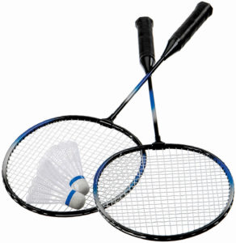

Điều 4. Vợt trong luật thi đấu cầu lông
- Khung vợt không vượt quá 680mm tổng chiều dài 230mm tổng chiều rộng, bao gồm:
+ Cán vợt là phần của vợt mà VĐV cầm tay vào.
+ Khu vực đan lưới là phần của vợt mà VĐV dùng để đánh cầu.
+ Đầu vợt giới hạn khu vực đan dây.
+ Thân vợt nối đầu vợt với cán vợt.
+ Cổ vợt ( nếu có ) nối thân vợt với đầu vợt.
- Khu vực đan lưới:
+ Phải bằng phẳng và gồm một kiểu mẫu các dây đan xen kẽ hoặc cột lại tại những nơi chúng giao nhau. Kiểu đan
dây nói chung phải đồng nhất, và đặc biệt không được thưa hơn bất cứ nơi nào khác.
+ Khu vực đan lưới không vượt quá 280mm tổng chiều dài và 220mm tổng chiều rộng. Tuy nhiên các dây có thể kéo
dài vào một khoảng được xem là cổ vợt, miễn là:
+ Chiều rộng của khoảng đan lưới nối dài này không vượt quá 35mm, và
+ Tổng chiều dài của khu vực đan lưới không vượt quá 330mm.
- Vợt:
+ Không được gắn thêm vào vợt vật dụng khác làm cho nhô ra, ngoại trừ những vật chỉ dùng đặc biệt để giới hạn
hoặc ngăn ngừa trầy mòn hay chấn động, hoặc để phân tán trọng lượng hay để làm chắc chắn cán vợt bằng dây buộc
vào tay VĐV, mà phải hợp lý về kích thước và vị trí cho những mục đích nêu trên; và
+ Không được gắn vào vật gì mà có thể giúp cho VĐV thay đổi cụ thể hình dạng của vợt.
